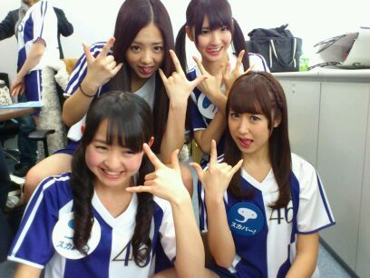

まひろ、まりか、ゆったん、みさみさ、さゆにゃ―ん♪
ちょっと調子のりましたω

二枚 はったけど、見れてますかぁ？♪
この衣装、すごい動きやすくて好き
(*^^*)
「左胸の勇気」好き。
落ち込んでる時とか聞いたら
いっきに たまってた涙が
溢れてくる曲です(ω)
...・・・
火曜日の夜。
レッスンが早く終わったので、
さゆにゃんと ファミレスに
寄って帰りました^^
途中、時計を見たら
きずかぬ間に 2時間半も
しゃべっていました♪
だから結局 3時間近く
いたのかなぁ？
乃木坂に入るまでのことを
お互い話したり
色々と話していました^ω^))
さゆにゃん ありがとう(*^^*)
...・・・
はいっ))!!ω 今日もみなさんからの
コメントの質問に答えてくゾー☆
★尻相撲で転んでたけど大丈夫？
☆あん時、膝 アオタンなりました。笑 痛かったです...。♪
でも 全然大丈夫ですよ(*^^*)
★スポーツは何が好き？
☆まひろ
スキー、スケート、ローラースケートと 滑る系が 得意やったんで、
スノボー♪したいなぁω))
って思います。
体育の授業だったら
バスケが楽しかったです♪
★手紙って読んでくれてる？
☆手紙もコメントもプレゼントも
ちゃんと見てます(*^^*)
ありがとうございます♪
★まーぴょん って呼んでいい？
☆色んな呼び名 考えてくれんのって
ほんと嬉しいです^^
まーぴょんって 全然呼んでください♪
★エビフライ しっぽまで食べる派？
☆絶対 シッポ食べますよっ))!ω
美味しいもん〜(^_^)
★ろってぃー身体 大丈夫？
体調わるない？
☆全部わるないですよーっ^^
だって ダイエット中とかゆーて
体調崩したないから
ここ三日間位 中断してんもーんωω笑
★柿ピー は好きですか？
☆柿ピーねえ、 大好きですわ(・・;)♪ めちゃ 美味しいですよねぇぇ^ω^
小さい頃よく食べてましたね♪
はいっ))
今日はちょっとやけどここまでっ(⌒‐⌒)
寝ます=^ω^=
おやすみなさい♪